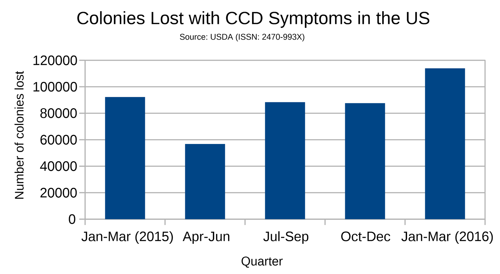
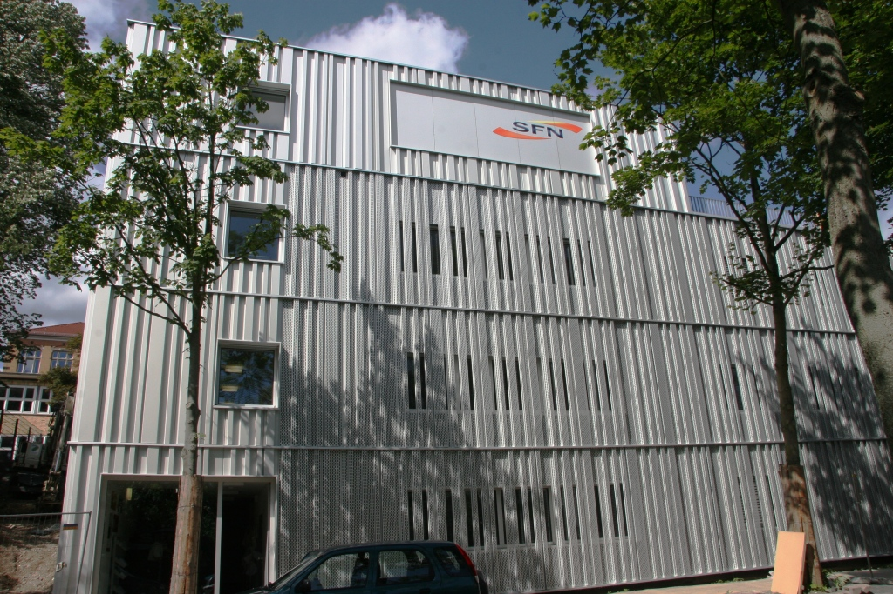

GreenTec Awards 2017
With 24% of all votes in our category, we managed to win the WWF Galileo Green Youngster Award of the 2017 GreenTec Awards.
Thanks a lot for your support!
With 24% of all votes in our category, we managed to win the WWF Galileo Green Youngster Award of the 2017 GreenTec Awards.
Thanks a lot for your support!
For many years beekeepers have been noticing a steady loss of bee population. This phenomenon is called Colony Collapse Disorder (CCD). It has many causes, too many to list, yet the main reasons for the death of the bees are most likely insecticides and a certain parasite. When we were starting out we heard of a story of a hive, which stood near a cell phone tower. Apparently many bees seemed to lose orientation and some even died because of this. As there is not much scientific research on this particular reason for CCD we wanted to study its significance. To find out how cell phone radiation affects the bees we measure various factors and then turn on a cell phone near the hive for different amounts of time. The aspects we measure include noise, temperature and the amount of bees leaving and entering the hive via a system of light sensors we built ourselves. Furthermore we have an infrared camera that observes the hive and takes pictures. We do not intend to harm the bees by any means. One of us took part in schooling for beekeepers, so we know how to correctly take care of the bees. After we see what kind of results the exposure of the bees to short term cell phone radiation yield we want to do long term measurements, with the cell phone automatically calling at certain times.
 CCD continues to be a problem for beekeepers, not just in the US but worldwide.In the Schülerforschungszentrum Nordhessen (SFN, Student Research Center of Northern Hesse)
stundents, typically groups, from all over northern Hesse can work on a science project of
their choice. We do the work on our own, but staff (teachers and university students) is there
to assist us. The four-story SFN building features a workshop,
laboratories (physics, biology and chemistry), an observatory with seven telescopes, all kinds
of scientific equipment and more on about 650 square meters.
You can find out more about the SFN on their website.
We are a group of five students, aged between 15 and 17. Three of us have been with the SFN for over 6 years. In the past we've done projects in the fields of physics, astronomy and electronics.
 The SFN building which was completed in July 2012.In June 2016 we set up a beehive adjacent to the SFN, in cooperation with a local urban beekeeper. A detailled report on the installation of the hive can be found on the SFN website.
 We placed a Raspberry Pi minicomputer with a camera in front of our beehive to live stream it's entrance.
Currently, images are taken every minute.
We placed a Raspberry Pi minicomputer with a camera in front of our beehive to live stream it's entrance.
Currently, images are taken every minute.